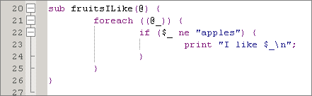
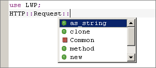
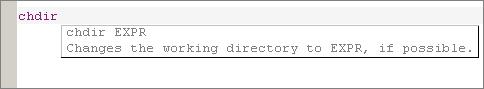

Komodo's editor has extensive code intelligence features for JavaScript, HTML, XML, XSLT, Perl, PHP, Python, Ruby, and Tcl. and provides syntax highlighting and common editor features for most other programming languages. Many of these features can be customized in Komodo's editor preferences.
Right-clicking in the editor pane brings up a context menu with common editing functions. In addition to standard Cut, Copy, Paste, Select All, and Print commands, the following options are available:
The Komodo editor is language-sensitive. When you open a file in a supported language, Komodo will color the syntax, format indentation, and provide indentation guides.
More Information:
As you write code in the editor, Komodo periodically checks for syntax errors. Syntax errors are underlined with a red wavy line; syntax warnings are underlined with a green wavy line. Komodo uses the language interpreter's own error-checking functions, so there may be slight differences in the way that syntax errors are detected and displayed depending on the version of the interpreter.
The syntax checking icon in the status bar displays the syntax status of the current file displayed in the Editor Pane:
You can view the error message from the interpreter in the status bar if the editing cursor is on the same line as the error. If it is not, hover the mouse pointer over the error and the interpreter error will be displayed in a pop-up tool tip.
To move the editing cursor to the line containing the error or warning, double-click the syntax checking icon. If there are multiple errors or warnings, each time you double-click the icon, the editing cursor will move to the next error.
If background syntax checking is disabled in Preferences, shift-click on the syntax checking icon to check the syntax of the file.
Right-clicking on the syntax checking icon brings up the context menu.
Komodo supports background syntax checking for the following languages:
|
|
* requires ActivePerl build 623
or higher ** requires PHP version 4.05 or greater |
More Information:
Autocomplete and calltips are two related features to help you write code more efficiently.
Autocomplete presents a pop-up list of relevant choices at certain trigger points as you are editing a document. Autocomplete functionality varies according to language; for example, Python autocomplete lists object methods when you type the '.' (period) trigger character, Perl autocomplete lists available sub-packages when you type the '::' trigger string in a "use" statement, and XSLT autocomplete lists appropriate element and attribute names when starting XML tags.
Use the arrow keys to scroll through the list; use the 'Tab' or 'Enter' key to insert the currently selected item into your document; use the 'Esc' key to cancel the pop-up list.
A calltip presents you with a call signature for, and possibly a short description of, a function or method call.
Generally, a calltip is opened when you enter the open parenthesis, "(", of a function call. However, this varies according to language. Use the 'Esc' key to close the calltip.
Komodo includes autocomplete and calltip support for several languages. Language-specific functionality for each supported language is described below.
More Information:
Komodo supports XML autocomplete and calltips for basic XML as well as a a number of XML dialects, including:
|
|
|
Support for additional XML dialects can be configured by adding an XML Catalog for the dialect in the SGML/XML Catalogs section of the Code Intelligence Preferences.
Komodo supports the following types of XML autocomplete:
If the document does not have an XML declaration, autocomplete will default to XHTML 1.1. The DOCTYPE and namespace can be manually set under File Properties.
With Enable soft characters selected in Komodo's editor preferences, typing one of "[" "{" "(" will put the matching, highlighted closing character to the right of the cursor. The highlighting indicates that it's a "soft" character. If you move over the soft character with navigation keys or move to a new cursor position outside of the delimiters with the mouse, the soft characters become fixed (i.e. are inserted as normal text). You can also "type over" soft characters. For example:
object.method(value|)
Hitting the right arrow key or typing a ")" results in:
object.method(value)|
In most programming languages, typing a string-start character in a "default" context (i.e. not in a string or comment), will generate the appropriate soft quote to the right of the cursor. Komodo is aware that in some languages characters like single-quote are used to start a comment, so no soft character is generated.
Cursor movement (e.g. moving over the soft character with the right-arrow) "hardens" soft characters.
Komodo's syntax coloring, background syntax checking, and indentation are language-specific. However, Komodo provides the option to view a file as another language. This is useful when you open, for example, a Perl file that has no extension. You can select the Perl language option, then edit the file as a regular Perl file. Komodo's File Associations do not allow you to set a language association with a file that doesn't have an extension.
To view the current file as another language:
If you have opened a file that does not have a file association specified in the Preferences dialog box, Komodo displays the file as text. You can select to view the file as another language, but Komodo does not remember again. If you will be working with a new type of file, it is recommended that you specify a file association.
For example, if you open a DocBook (*.docb) file in Komodo, it does not have XML syntax coloring. Specify a file association to tell Komodo to open *.docb files as XML files. For more information on specifying file associations, see Customizing File Associations.
If you choose to view a file in a different language and then save the file, the original language will not be restored when you re-open the file. If you are unsure of the original language, you can select View|View As Language|Reset to best guess. Komodo will ignore the user preference, and analyze the file in an attempt to determine its language.
The commenting function is used to convert a single line or a group of lines into a comment, with the syntax appropriate for the file's language. Komodo supports commenting for the following languages:
More Information:
Komodo can repeat a single keystroke for a given number of characters. To have Komodo repeat a key sequence a specified number of times:
To indent a single line or a selected block of code:
To un-indent a single line or a selected block of code:
Specify the number of spaces per tab in the Indentation Editor Preferences (Edit|Preferences|Editor|Indentation).
To reformat a section of code so that it is left-aligned and displays within the Edge line column, select the section of code to be reflowed, and then select Code|Reflow Paragraph. Alternatively, use the associated key binding.
To cause two lines of code to display on the same line, position the cursor in the first of the two lines, and select Code|Join Lines. The second line is joined with the first line.
To convert a selection of text from uppercase to lowercase (or
vice-versa), from the Code menu, select
Make Uppercase or Make
Lowercase
, or use the associated key binding.
To reverse the position of the two characters to the left of the editing cursor, use the associated key binding.
To insert literal characters into the editor, select Code|Enter Next Character as Raw Literal, and then enter the key or key combination representing the literal character. (Alternatively, use the associated key binding.) For example, to insert a form feed, enter 'Ctrl'+'L'. The following characters are common:
To comment a single line of code, place the cursor on the desired line, then, from the Code menu, select Comment Region. Alternatively, use the associated key binding.
To un-comment a line of code, place the cursor is on the desired line, then, from the Code menu, select Uncomment Region. Alternatively, use the associated key binding.
To comment a block of code, select the lines you wish to comment by clicking and dragging the mouse in the Editor Pane. Then, from the Code menu, select Comment Region. Alternatively, use the associated key binding.
To un-comment a line of code, place your cursor is on the desired line, then, from the Code menu, select Uncomment Region, or use the associated key binding.
If a file contains line endings for more than one platform, you can replace the unwanted line endings with the line endings specified in file's Properties and Settings dialog box.
"Tabifying" a region converts leading spaces to tabs. If you select a line of code that has some leading spaces and you choose to tabify the region, you convert all the leading spaces into Tab characters. The Tabify region dialog box sets the ratio of space characters to Tab characters. If you select 8, then each 8 space characters will be represented as 1 Tab character.
To tabify a region:
To untabify a region:
To illustrate tabifying, follow this procedure:
$sum += $prices[$i];
There are four leading spaces on this line. You can tabify this
line and convert each space character into one Tab
character.print $sum += $prices[$i];. This
causes the line to be indented too far.Now look at another line with 8 leading spaces.
print "element %s is a
string" % element. There are 8 leading spaces on this
line.print "element %s is a string" %
element;. This does not change the line's
indentation.You can set the width of Tab characters in the Preferences dialog box. The default value is 8.
Select columns of text in Komodo by pressing the 'Alt' key and then dragging with the mouse. This feature, often called block selection, is particularly useful when you want to easily move code and data that is arranged in columns. Once the column of text has been selected, use the keyboard or the Edit menu to delete it or move it to another location.
The Komodo editor maintains an index of words in the current file. Rather than re-entering words that already exist in the current file, use the Complete Word feature to finish words.
Enter one or more characters, then select Code|Complete Word, or use the associated key binding. Words are completed based on the most recent occurrence in the current file. For example, if you type "pr", Komodo searches backward from the insertion point to find the first instance of a word that begins with "pr". Continue pressing the spacebar while holding down the 'Ctrl' ('Meta' on Mac OS X) key to cycle through all possible completions for the word. The Complete Word feature is case sensitive.
Quickly select blocks of code using Komodo's Select Block function (Code|Select Block, or use the associated key binding). This function uses the Code Folding logic.
When the Select Block function is invoked, Komodo analyzes the cursor position relevant to the blocks of code in the document. If the cursor is within a block, the entire block will be selected. (If the cursor is within a nested block, only the current sub-block will be selected, not the block that contains the entire nested structure.) If the cursor is not inside a block, the entire document will be selected.
Whitespace is any space in a file not taken up by text. Line breaks, spaces, and tabs are considered whitespace.
To toggle whitespace on and off, select View|View Whitespace, or use the associated key binding.
To set a default for whitespace display, see Customizing Editor Features for more information.
Indentation guides display vertical lines in the Editor Pane that indicate the number of whitespace indents. The width of indentation guides is determined by the value in the Indentation Width preference. See Customizing Indentation for more information.
To toggle indentation guides on and off, select View|View Indentation Guides, or use the associated key binding.
Line numbers can help orient you when working in a long file.
To toggle line numbers on and off, select View|View Line Numbers, or use the associated key binding.
To set this option globally, see Customizing General Editor Features for more information.
End-of-line markers indicate where and how a line ends, such as by a hard return or another key. If you use Enter to end a line, the EOL marker could be CR or CR+LF.
To toggle EOL markers on and off, select View|View EOL markers, or use the associated key binding.
To set this option globally, see Customizing General Editor Features for more information.
To increase the font size in the Editor Pane, select View|Font, and then Increase or Decrease. Alternatively, use the associated key binding. Repeat until the font size is appropriate. The size specification applies to all files open in the Editor Pane.
When you save a file, the new font size is saved.
In Komodo, you can use fixed width or non-fixed width fonts for editing. You can also toggle between these settings. The default font is non-fixed width. Note that this setting does not persist. If you toggle to a different setting, the next time you open the file it will restore the width specified on the Fonts tab of the Fonts and Colors page in Komodo Preferences.
To toggle between fixed and non-fixed width font:
Code folding symbols appear in the left margin of the Editor Pane immediately left of the line of code that is or can be folded. Minus signs indicate the beginning of a block of code that can be collapsed or folded. Plus signs indicate the beginning of a block of code that can be expanded or unfolded. This line of code is also underlined.
Either specific code blocks or all code blocks can be folded.
To collapse or fold a single block of code:
To collapse or fold all foldable blocks of code:
To expand or unfold a single block of code:
To expand or unfold all foldable blocks of code:
While editing, you can move to a specific line number as follows:
You can jump to the definition of a code object under your cursor (e.g. a variable, a subroutine, a module, etc.) in any of the following ways:
Objects defined within the file, in user-defined modules, and in the site library are accessible in this way; objects defined in a language's standard library are not.
Bookmarks are points of interest in a file. Komodo displays blue triangles on the left margin beside bookmarked lines. Marks, which are derived from the Emacs editor, are similar to bookmarks. The key difference is that marks have no graphical representation in Komodo. Marks make it possible to create an invisible reminder of previously visited locations in a file.
Use the Matching Brace functions to quickly jump between opening and closing braces and parentheses. Notice that when the editing cursor is adjacent to a brace or parenthesis, the brace is displayed in bold red. The associated closing or opening brace is also displayed in bold red.
To jump to the matching brace, select Code|Jump to Matching Brace, or use the associated key binding. To select the braces and the contents they contain, select Code|Select to Matching Brace.
Komodo can be configured to monitor the status of files that are opened in the editor. If the file is changed on disk, you will be prompted to reload the latest version under the following circumstances:
Use Komodo's Preferences to enable or disable this function.
You can configure Komodo to preview a variety of file types in your default browser, or in the Editor Pane. The Preview in Browser feature is particularly useful when working with HTML or XML files.
The browser preview will be displayed in a separate window, in the Editor Pane, or in a split view of the Editor Pane, depending on which preference has been set.
The context menu in the Editor Pane is only available when the "source" tab is in focus. If Komodo does not support previewing of a specific file type, the Preview in Browser option will not be available from either the toolbar or the View menu.
To preview a file with the Preview in Browser feature:
Use the following commands on the Window menu to manage the way previews and tab groups are displayed in the Editor Pane:
If displayed in the Editor Pane, previews include a toolbar with basic Web browser functionality, including (from left to right) "Back", "Forward" "Reload", and "Stop" buttons.